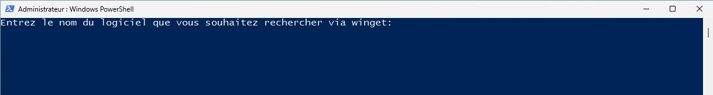
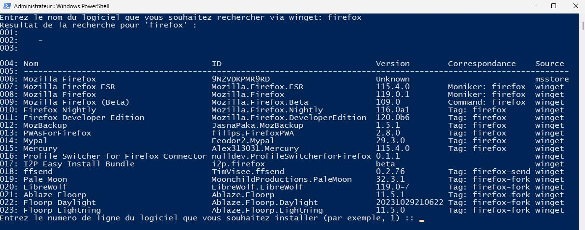

Installation de logiciels
Lorsque vous utilisez la fonction "Mise à jour du système", toutes les applications installées nativement sur la machine virtuelle se mettent à jour automatiquement.
Ainsi, l'ajout de nouveaux logiciels nécessite de passer par un système un peu différent de celui consistant à simplement vous rendre sur internet et à télécharger un fichier d'installation.
L'utilisation de cette fonctionnalité aide à garantir la sécurité de tout l'écosystème en vous permettant de disposer des dernières mises à jour, afin d'éviter toute faille de sécurité.
Pour installer un nouveau logiciel, dirigez-vous dans le dossier "ESP", qui se trouve sur le bureau de la machine virtuelle. Vous y trouverez un fichier nommé "Installation de logiciels".
Lorsque vous le lancez, il vous demande d'entrer le nom du logiciel que vous souhaitez installer.


Une fois le nom entré et validé, un tableau s'affiche vous proposant l'ensemble des logiciels qu'il vous est possible d'installer et dont le nom correspond à votre recherche.
Identifiez la ligne correspondant au logiciel que vous souhaitez installer, et entrez le numéro de la ligne correspondante (sur la gauche, avec ou sans le premier "0". Exemple : "023" ou "23").
Si possible, en cas de résultats multiples, favorisez les lignes dont la source, à droite, correspond à "Winget". Dans notre exemple, pour installer "Firefox", il y aurait lieu de favoriser la ligne "008" plutôt que la ligne "006".
Une fois que vous entrez et validez le numéro de ligne correspondant au logiciel souhaité, l'installation se lance.
À l'issue, il vous sera proposé d'entrer le nom d'un nouveau logiciel à installer, si vous le souhaitez. Il en sera de même si votre recherche s'avère infructueuse.